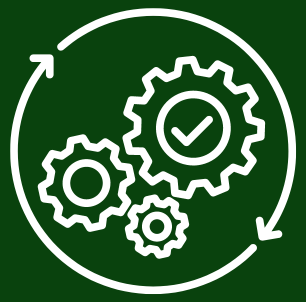

A 7Sojas é uma empresa inovadora que oferece soluções tecnológicas para o agronegócio, com foco na cadeia de armazenamento de sojas.
Nossa missão é ajudar proprietários de silos a alcançarem o máximo potencial de seus silos, com o máximo de eficiência e rentabilidade.
Proteja sua produção e maximize seus resultados com o sistema de monitoramento de temperatura e umidade da 7Sojas!
Utilizamos os melhores sensores do mercado para garantir a máxima precisão e confiabilidade no monitoramento.
Com a 7 Sojas, você pode ter a certeza de que seus grãos estão armazenados em condições ideais, maximizando a qualidade e a rentabilidade da sua produção.
Solicite um orçamento sem compromisso e descubra como podemos te ajudar a alcançar o máximo potencial da sua produção de soja.

Com a 7Sojas, você não apenas maximiza seus lucros,mas também abraça práticas agrícolas sustentáveis,contribuindo para um futuro mais verde e próspero.
Na 7Sojas, garantimos a proteção inabalável de seus dados e de seu armazenamento de sojas, proporcionando-lhe uma tranquilidade total em cada etapa do processo.
Simplifique a gestão do seu armazém de sojas com nossos sistemas avançados de monitoramento, oferecendo-lhe precisão para tomar decisões em tempo real.


7SOJAS © 2024. Todos os direitos reservados.